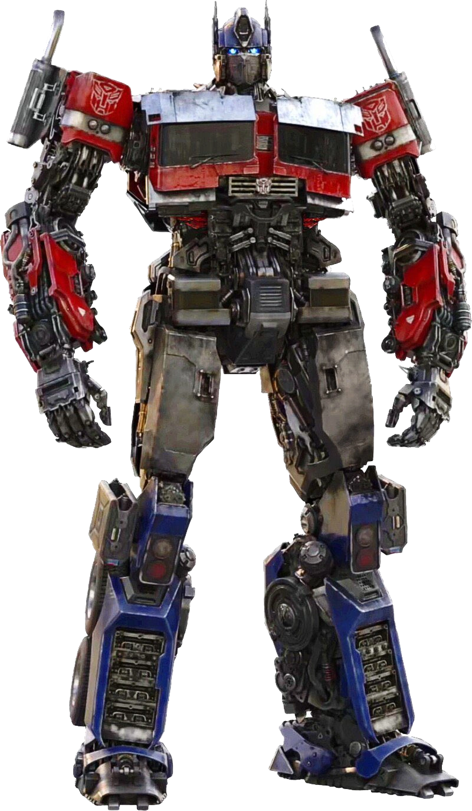
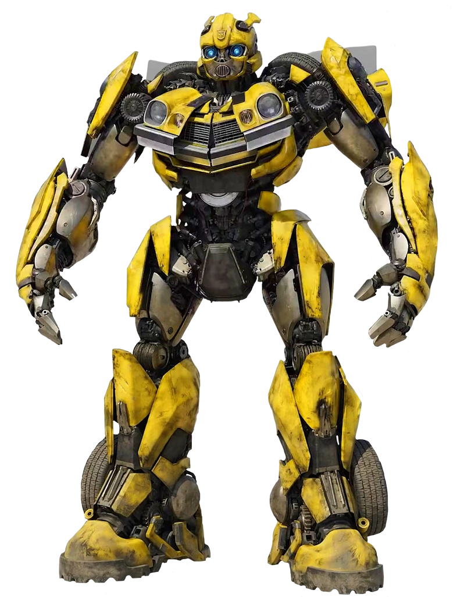
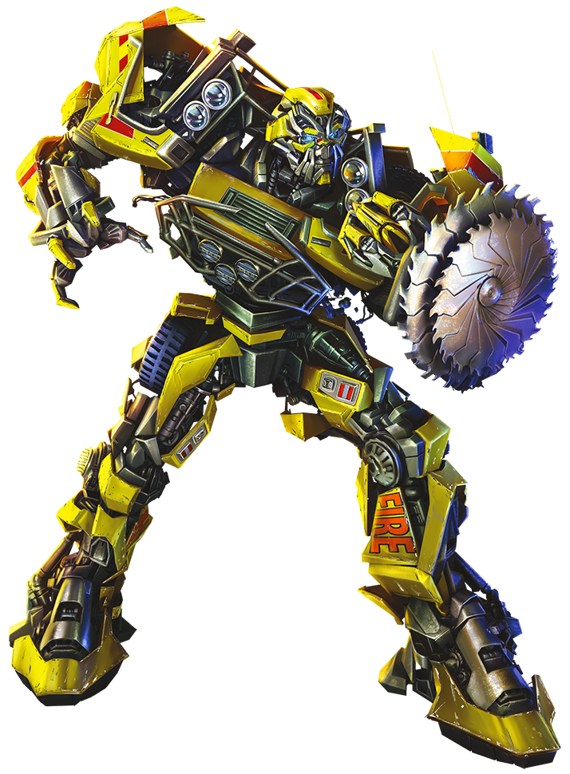

The Beginning
The reason I chose this word may have been obvious from the moment you have entered this web page. These robots that turn into
cars are, at least in my mind, the most iconic meaning of "Transformer". There are other meanings that we will look at later, but for now
let's focus on these robots.
I can't say I have ever been a huge fan of the Transformers as a franchise, but I have played with them as a child. After all, robots that turn into cars
are every little boy's dream. Ever since then, that has been the main meaning of "Transformer" to me, and I am sure I am not the only one.
It's not even just "Transformer". Derivatives like "Transform" immediately bring my mind to the robots too. Not to mention the other meanings of "Transformer",
like the electrical one, which I still don't exactly know what it does, most likely because the robots have overwritten it.
Still, the point of this exercise is to dive deep into all possible meanings of the word, so I will do my best to put the robots aside just this once.

The Investigation
Looking past the cool robots, first I must find out what a "Transformer" is in electrical circuits. Looking it up, I did not understand much,
but I do remember seeing one in a microwave at some point, and that if handled poorly can be very dangerous. Either way, it's called that because it
transfers or transforms electrical current. So we can already find a correlation between this and the robots, where a Transformer is something that transforms,
either itself or something else (what a shocker).
Then I wanted to figure out if a Transformer robot would use a microwave transformer to be powered. Unfortunately, I know nothing about things like
this, so I had to ask my friend ChatGPT. They said something along the lines of: "Maybe, but most likely no".
Asking other people "What is the first thing that comes to mind when you hear transformer?", I got exactly the answers I expected.
Everyone under the age of 50 said robots, everyone over said electrical. One exception struck my interest though, when a friend said "a transgender transformer (car robot)".
I have no idea where this came from, but it got me thinking about the transformation of changing genders. Can you call a transgender person a transformer?
Is it offensive?
We, as humans, change as we learn and grow. Does that make us all transformers?

The Conclusion
According to the dictionary, to transform is to "make a marked change in the form, nature, or appearance of". This means that whenever we change anything about
ourselves, we transform. This includes, changing your clothes or your hairstyle, learning something new, and even feeling an emotion like anger, as it changes your
nature, even if only temporarily or only by a little bit. That makes us all transformers
This information must have shocked you, or at least made you feel something, which again has transformed you. We are, in my opinion, ever-changing transformers,
that can never return to their original form, but rather keep transforming into something else forever and ever. This gives us an endless number of forms, which,
in a way, is even cooler than the car robots.
So go out there and transform into the best version of you!
(Or a truck if you can)